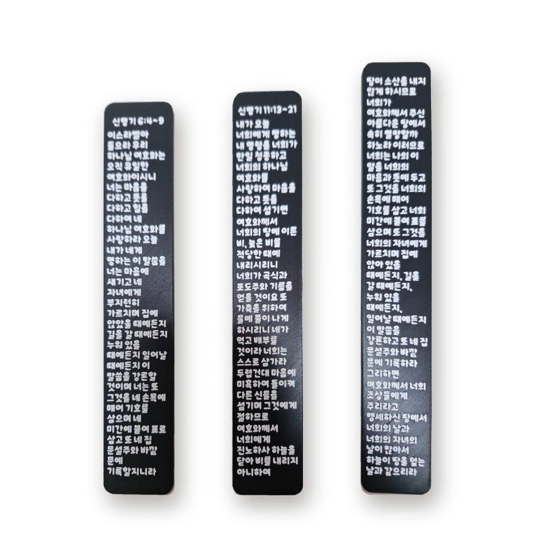
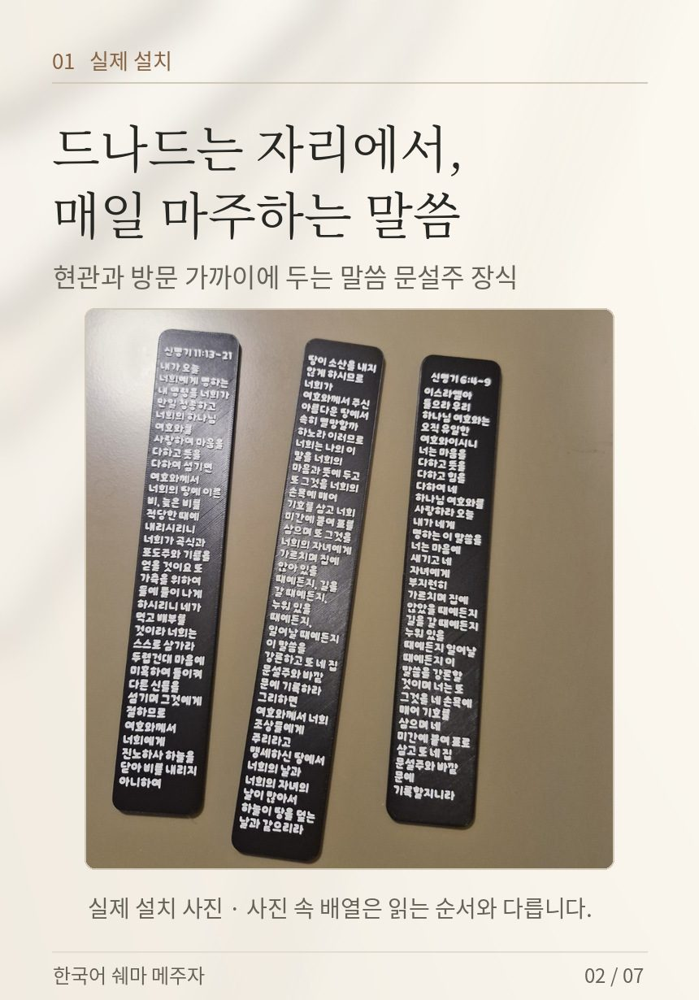
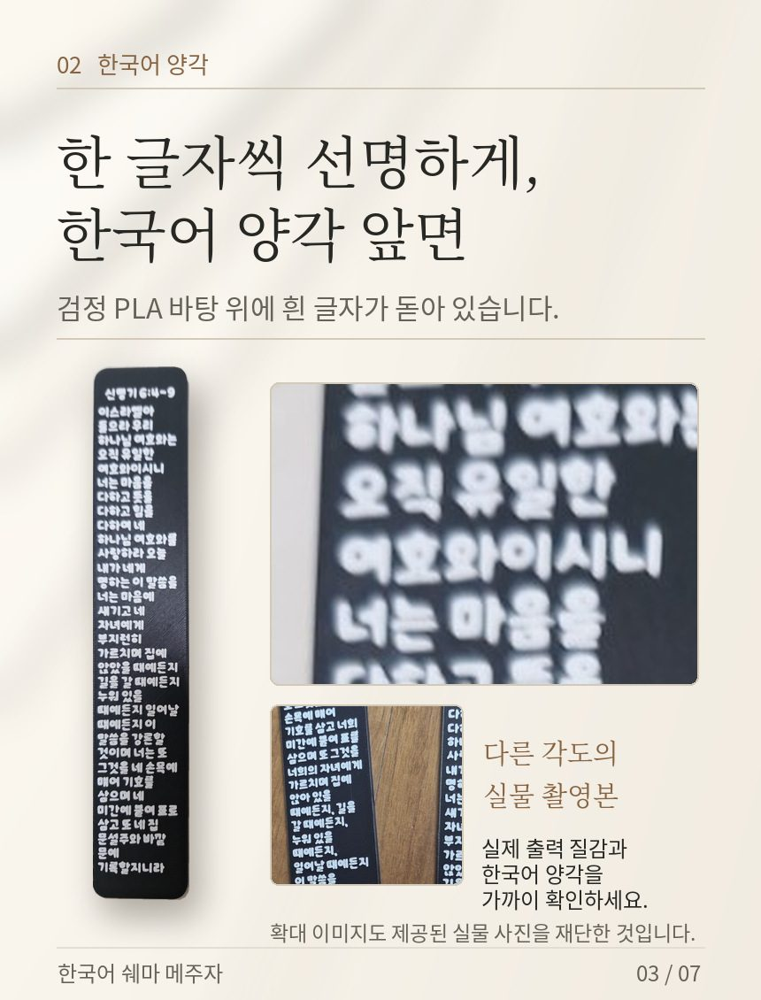
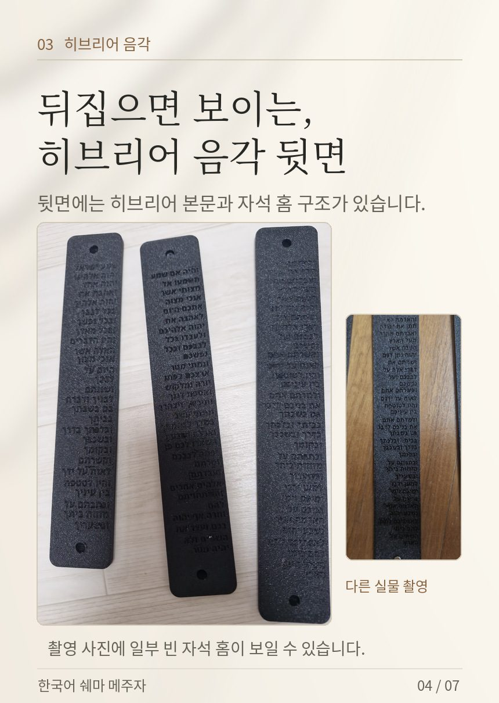
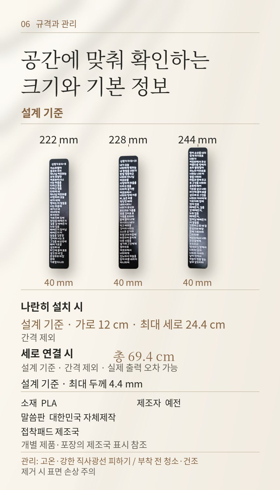

한국어 쉐마 메주자 · 한글로 읽는 말씀 문설주
문을 드나드는 일상에 말씀을 두세요. 앞면은 한국어 양각, 뒷면은 히브리어 음각으로 된 쉐마 말씀 장식 3장 세트입니다.
판매자 예전이 직접 작성 · 가격 확인일 2026년 10월 22일 (쿠팡 판매가는 바뀔 수 있습니다)

한눈에 보는 요약
| 상품명 | 한국어 쉐마 메주자 말씀 문설주 자석형 3장 세트 (접착패드 포함) |
|---|---|
| 본문 | 신명기 6:4–9, 신명기 11:13–21 (세 장이 이어지는 하나의 본문) |
| 앞면 / 뒷면 | 한국어 양각 (검정 바탕, 흰 글자) / 히브리어 음각 |
| 부착 | 자석형 · 자석이 붙지 않는 면용 접착패드 동봉 |
| 크기 | 각 폭 40mm · 길이 222 / 228 / 244mm · 최대 두께 4.4mm (설계 기준) |
| 설치 크기 | 나란히: 가로 약 12cm × 세로 최대 24.4cm · 세로로 이어서: 총 길이 약 69.4cm (간격 제외) |
| 소재·제작 | PLA · 말씀판 대한민국 자체 제작 · 제조자 예전 |
| 가격·구매처 | 29,900원 무료배송 · 쿠팡 판매자 예전 · 상품번호 9774864105 |
메주자와 쉐마, 무슨 뜻인가요?
메주자(mezuzah)는 히브리어로 '문설주'라는 뜻입니다. 신명기 6장 9절에서 말씀을 집 문설주와 바깥 문에 기록하라고 한 데서 비롯되었습니다. 유대인들은 쉐마 본문을 문설주에 붙여 두고 드나들 때마다 그 말씀을 기억합니다.
쉐마(Shema)는 '들으라'는 뜻으로, 신명기 6장 4절 "이스라엘아 들으라"로 시작하는 본문입니다. 이 상품은 이 전통에서 착안해 우리말로 읽을 수 있게 만든 말씀 장식입니다. 유대교 율법에 따른 양피지 두루마리(클라프)는 아닙니다.

세 장의 순서
- 신명기 6:4–9
- 신명기 11:13–21 앞부분
- 신명기 11:13–21 뒷부분
세 장이 이어져 하나의 말씀이 됩니다. 문 세 곳에 한 장씩 나눠 붙이는 구성이 아닙니다. 한 자리에 나란히 붙이거나 세로로 이어 붙이세요.
앞면은 한국어, 뒷면은 히브리어
앞면은 검정 PLA 바탕 위에 흰 한국어 글자가 돋아 있고, 뒷면에는 히브리어 본문이 새겨져 있으며 자석 홈이 있습니다. 3D 프린팅으로 만들어 표면에 적층 결이 보입니다.


붙이는 방법
- 붙일 자리를 깨끗이 닦고 완전히 말립니다.
- 자석이 붙는 면(현관 철문 등)에는 자석으로 붙입니다.
- 나무·벽지·타일처럼 자석이 붙지 않는 면에는 동봉된 접착패드를 씁니다.
면의 재질과 상태에 따라 부착력이 달라질 수 있습니다. 고온과 강한 직사광선은 피하고, 뗄 때는 표면이 상하지 않게 주의해 주세요.

자주 묻는 질문
한국어로 된 메주자는 어디서 살 수 있나요?
쿠팡에서 판매자 '예전'의 상품(상품번호 9774864105)으로 살 수 있습니다. 29,900원 무료배송입니다.
세 장을 문 세 곳에 하나씩 붙이는 건가요?
아닙니다. 세 장이 이어지는 하나의 본문입니다. 한 자리에 나란히 또는 세로로 이어 붙이세요.
철문이 아니어도 붙일 수 있나요?
네. 자석이 붙지 않는 면에는 동봉된 접착패드를 쓰면 됩니다.
기독교 집들이 선물로 괜찮을까요?
현관 가까이에 두고 드나들 때마다 말씀을 보도록 만든 장식이라 집들이, 심방, 교회 선물로 좋습니다. 한글 앞면과 히브리어 뒷면이 함께 있어 의미를 설명하기 쉽습니다.
유대교에서 쓰는 정식 메주자인가요?
아닙니다. 메주자 전통에서 착안해 한국어로 읽도록 만든 말씀 장식입니다. 양피지 두루마리는 들어 있지 않습니다.